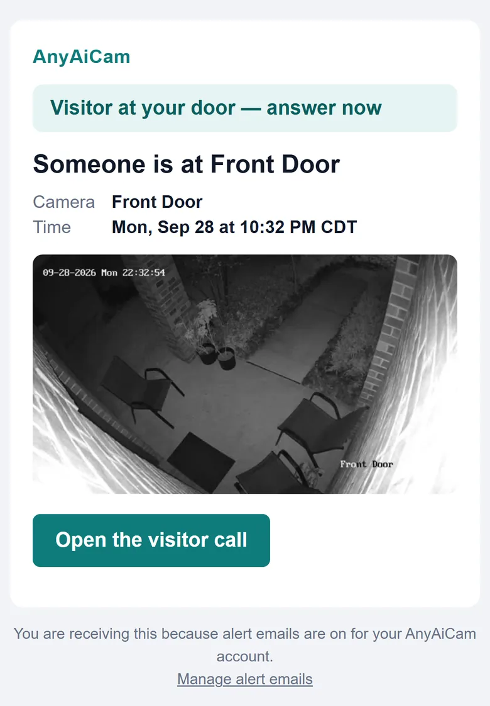
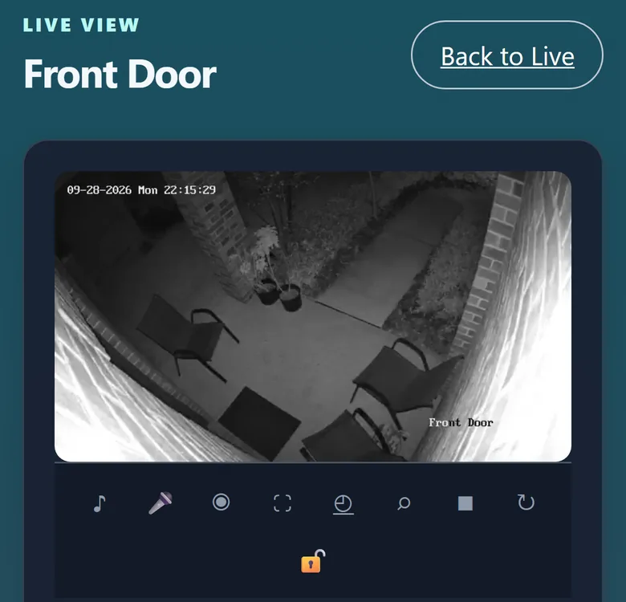
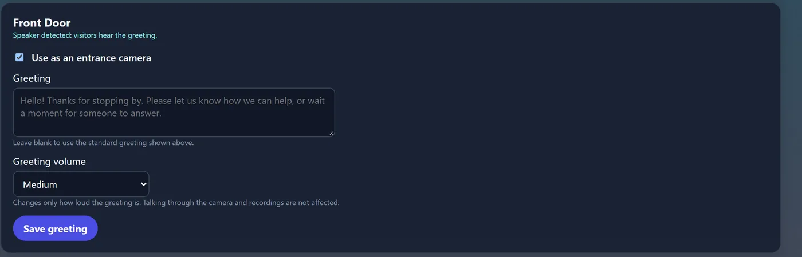

Live video and sound
The call opens the camera’s live video with sound, so you can see and hear who is there.
AAC VC turns your front-door camera into a visitor call. When a person walks up, AnyAiCam greets them through the camera’s speaker, listens to why they are there, and calls you with live video so you can see who it is and answer.
Available with AnyAiCam VMS
AnyAiCam notices a person at a camera you have chosen as an entrance camera.
The camera says a greeting you choose, through its own speaker. You set the words and the greeting volume.
It picks up common reasons for a visit: a delivery, a maintenance or service visit, “is anyone home?”, or a simple hello.
A Visitor Call alert with the visitor’s snapshot. One tap opens the call.
See and hear your visitor live. Talking back through the camera’s speaker is in final testing.
If the entrance is connected to AnyAiCam access control, a person with unlock permission can unlock the door from the call after confirming. Never automatically.


When a visitor call starts, you get the Visitor Call, not a second “person detected” email for the same visit. The visit still appears in your alert history.
The call opens the camera’s live video with sound, so you can see and hear who is there.
Speak to your visitor through the camera’s speaker from your phone or computer.
For entrances connected to AnyAiCam access control, with permission and confirmation.
Know who is at the door whether you are upstairs, at work or away. Answer deliveries and visitors from your phone, and keep every visit in the same app as the rest of your cameras.
Include a front-door camera with AAC VC in a new home, so buyers move in with a visitor call that works with the rest of their AnyAiCam cameras. Contact us about builder projects.

Ask us which cameras work best at your entrance, or plan a complete system.